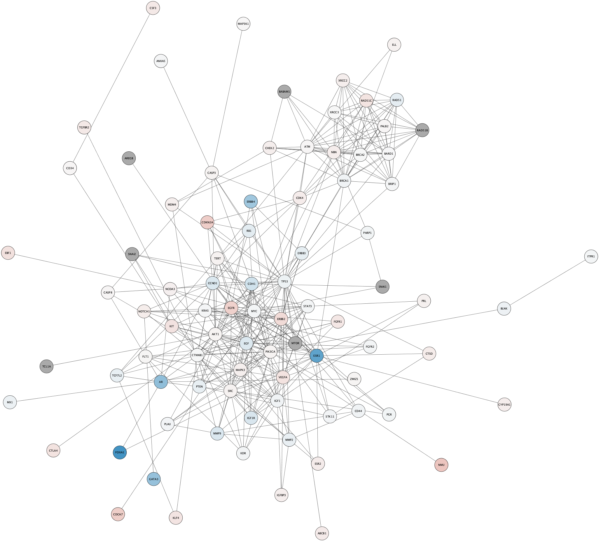
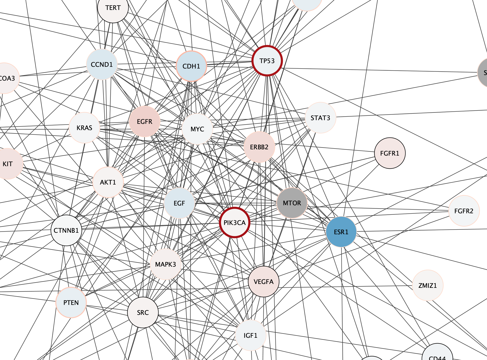
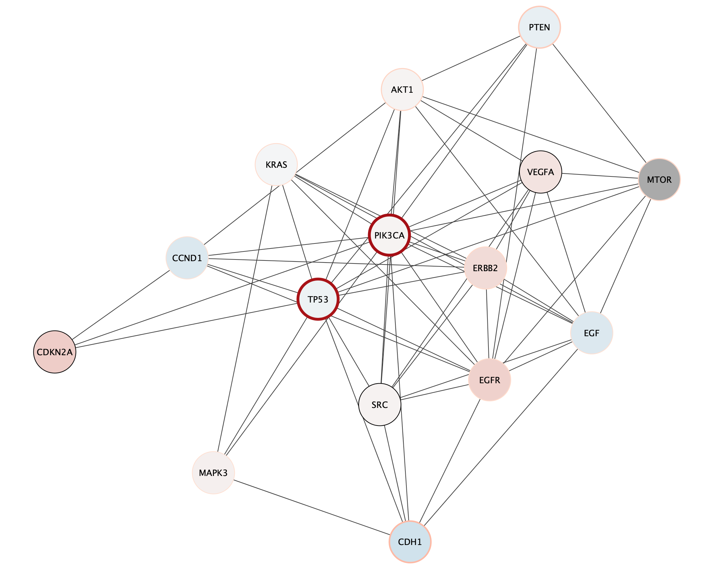

Cancer Networks and Variant Data
This protocol will demonstrate network retrieval from the STRING database, basic analysis, TCGA data loading and visualization in Cytoscape.
Setup
Getting Disease Networks
We are going to query the STRING database from Cytoscape to retrieve networks of genes associated with breast cancer.
- In the
Network Search bar at the top of theNetwork Panel , selectSTRING disease query from the drop-down, and type in breast cancer. - Click the
options icon and set the
and set the Confidence (score) cutoff to 0.9 and theMaximum number of proteins to 150. - Click the
search icon to search.
to search.
Layout Network
We can apply a layout algorithm to help visualize the network. Cytoscape supports a large collection of automatic layout algorithms, available under the
- Open the
Layout Settings by selectingLayout → Settings... . - Under
Layout Algorithm , selectPrefuse Force Directed . - Set the
Default Spring Coefficient to 8E-7 and theDefault Spring Length to 70. - Click
Apply Layout .
Generate Subnetworks
To explore the network, we can use various parameters of the network to generate relevant subnetworks. Let's start by creating a network from a subset of nodes with a high disease score:
- Click on the
Filter tab of theControl Panel . - Click on the drop-down to the right and select
Create New Filter . - Click the
+ (add) button and selectColumn Filter . In theChoose column... drop-down, selectNode: disease score . - In the selection slider, select scores of 3.3 or higher. This will select around 40 nodes.
- With the nodes still selected, go to
File → New Network → From Selected Nodes, All Edges .
This will create a subnetwork with a connected component and some unconnected nodes. We can delete the extra nodes by selecting them with click-and-drag and clicking
Generate Subnetworks
Another strategy is to create a subnetwork from first neighbors of genes with the highest disease score, using the network connectivity together with the data to direct discovery.
- In the original String breast cancer network, reapply the disease score > 3.3 filter, unless the relevant nodes are still selected.
- With the nodes selected, go to
Select → Nodes → Select First Neighbors of Selected Nodes → Undirected . - With the nodes still selected, go to
File → New Network → From Selected Nodes, All Edges .
Generate Subnetworks
The Diffusion app uses the network connectivity in a more subtle way than just first-degree neighbors. We can combine this with the top scoring genes:
- Again, select the original String breast cancer network. Click anywhere on the canvas to undo the current node selection.
- In the
Filter tab, adjust the threshold for the disease score column filter to select nodes with a score of 4.2 and above. This will select a small number of top nodes. - With the nodes selected, select
Tools → Diffuse → Selected Nodes . - The Diffusion results will open in the
Results Panel . ClickCreate to create a subnetwork. - Apply the
Prefuse Force Directed layout.
Visualizing Data
From the TCGA, we have access to mutation data and expression data for breast cancer. We can visualize this data on the network, and also use it for analysis.
- Select the second subnetwork, representing nodes with disease score of 3.3 or higher and their first neighbors.
- Load the mutation data file file under
File menu, selectImport → Table from File.... . - For this data, the
Key Column for Network should be set to display name to match the Hugo symbol used in the data. - Repeat the import process for the expression data file, again mapping through the display name.
Visualizing Data
Let’s create a new style to visualize our imported data.
- In the
Style tab in theControl Panel , click theOptions icon and select Create New Style... . Name your new style data style. - Change the default node shape to ellipse and check Lock node width and height.
- Set the default node
Size to 60. - Set the default node
Fill Color to gray. - Set the default edge
Width to 2. - Create a
Passthrough Mapping for nodeLabel to display name.
Visualizing Data
Now we can add a mapping for mean expression.
- Create a
Continuous Mapping for nodeFill Color to expr.mean, using the default blue-red gradient.

Visualizing Data
Finally, we can add a mapping for mutation data.
- Create a
Continuous Mapping for nodeBorder Width to mut_count, with node border width from 2 to 8. - Create a
Continuous Mapping for nodeBorder Paint to mut_count, using the ColorBrewer Red palette.
This is a useful pair of visual properties to map to a single data column. See why?
Subnetwork Based on Diffusion from Heavily Mutated Nodes
We can now combine our earlier strategy for subnetwork selection with the mutation data, by using the Diffusion algorithm on the top mutated genes.
- The top two mutated genes in this network are TP53 and PIK3CA. Select these two nodes.
- With the nodes selected, select
Tools → Diffuse → Selected Nodes . - The Diffusion results will open in the
Results Panel . ClickCreate to create a subnetwork. - The subnetwork may open with the default visual style. In the
Style tab, select the data style that we created earlier. - Apply the
Prefuse Force Directed layout.
Subnetwork Based on Diffusion from Heavily Mutated Nodes
The top mutated genes are based on TCGA data and the diffusion algorithm is operating based on the network connectivity from STRING data, leading to a focused subnetwork view of critical breast cancer genes with mean patient expression data mapped to fill color. Now that’s data integration!
Exporting Networks
Cytoscape provides a number of ways to export results and visualizations:
- As an image:
File → Export → Network to Image... - To a public repository:
File → Export → Network to NDEx , orFile → Export → Collection to NDEx - As a Cytoscape JSON file:
File → Export → Network to File and select Cytoscape.js JSON as the format.